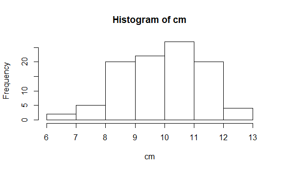

Simulation
swirl()
| Welcome to swirl! Please sign in. If you've been here before, use the same name as you
| did then. If you are new, call yourself something unique.
What shall I call you? Krishnakanth Allika
| Please choose a course, or type 0 to exit swirl.
| Please choose a course, or type 0 to exit swirl.
1: R Programming
2: Take me to the swirl course repository!
Selection: 1
| Please choose a lesson, or type 0 to return to course menu.
1: Basic Building Blocks 2: Workspace and Files 3: Sequences of Numbers
4: Vectors 5: Missing Values 6: Subsetting Vectors
7: Matrices and Data Frames 8: Logic 9: Functions
10: lapply and sapply 11: vapply and tapply 12: Looking at Data
13: Simulation 14: Dates and Times 15: Base Graphics
Selection: 13
| | 0%
| One of the great advantages of using a statistical programming language like R is its
| vast collection of tools for simulating random numbers.
...
|== | 3%
| This lesson assumes familiarity with a few common probability distributions, but these
| topics will only be discussed with respect to random number generation. Even if you
| have no prior experience with these concepts, you should be able to complete the lesson
| and understand the main ideas.
...
|===== | 6%
| The first function we'll use to generate random numbers is sample(). Use ?sample to
| pull up the documentation.
?sample
| Nice work!
|======= | 9%
| Let's simulate rolling four six-sided dice: sample(1:6, 4, replace = TRUE).
sample(1:6,4,replace=TRUE)
[1] 3 5 5 3
| Keep up the great work!
|========== | 12%
| Now repeat the command to see how your result differs. (The probability of rolling the
| exact same result is (1/6)^4 = 0.00077, which is pretty small!)
sample(1:6,4,replace=TRUE)
[1] 2 6 6 3
| Keep working like that and you'll get there!
|============ | 15%
| sample(1:6, 4, replace = TRUE) instructs R to randomly select four numbers between 1
| and 6, WITH replacement. Sampling with replacement simply means that each number is
| "replaced" after it is selected, so that the same number can show up more than once.
| This is what we want here, since what you roll on one die shouldn't affect what you
| roll on any of the others.
...
|=============== | 18%
| Now sample 10 numbers between 1 and 20, WITHOUT replacement. To sample without
| replacement, simply leave off the 'replace' argument.
sample(1:20,10)
[1] 11 1 12 10 9 20 17 8 7 5
| Keep working like that and you'll get there!
|================= | 21%
| Since the last command sampled without replacement, no number appears more than once in
| the output.
...
|=================== | 24%
| LETTERS is a predefined variable in R containing a vector of all 26 letters of the
| English alphabet. Take a look at it now.
LETTERS
[1] "A" "B" "C" "D" "E" "F" "G" "H" "I" "J" "K" "L" "M" "N" "O" "P" "Q" "R" "S" "T" "U"
[22] "V" "W" "X" "Y" "Z"
| You got it!
|====================== | 27%
| The sample() function can also be used to permute, or rearrange, the elements of a
| vector. For example, try sample(LETTERS) to permute all 26 letters of the English
| alphabet.
sample(LETTERS)
[1] "A" "G" "K" "S" "B" "C" "U" "D" "P" "I" "Z" "V" "M" "R" "E" "Q" "Y" "N" "F" "T" "L"
[22] "J" "X" "O" "H" "W"
| You are amazing!
|======================== | 30%
| This is identical to taking a sample of size 26 from LETTERS, without replacement. When
| the 'size' argument to sample() is not specified, R takes a sample equal in size to the
| vector from which you are sampling.
...
|=========================== | 33%
| Now, suppose we want to simulate 100 flips of an unfair two-sided coin. This particular
| coin has a 0.3 probability of landing 'tails' and a 0.7 probability of landing 'heads'.
...
|============================= | 36%
| Let the value 0 represent tails and the value 1 represent heads. Use sample() to draw a
| sample of size 100 from the vector c(0,1), with replacement. Since the coin is unfair,
| we must attach specific probabilities to the values 0 (tails) and 1 (heads) with a
| fourth argument, prob = c(0.3, 0.7). Assign the result to a new variable called flips.
flips<-sample(c(0,1),100,prob=c(0.3,0.7))
Error in sample.int(length(x), size, replace, prob) :
cannot take a sample larger than the population when 'replace = FALSE'
flips<-sample(c(0,1),100,prob=c(0.3,0.7),replace = TRUE)
| Keep working like that and you'll get there!
|================================ | 39%
| View the contents of the flips variable.
flips
[1] 1 0 1 1 1 0 1 1 1 0 1 1 1 1 0 1 1 0 1 1 1 1 1 1 1 1 1 1 0 0 0 1 0 0 1 1 1 1 0 1 1 0
[43] 1 0 1 0 1 1 0 1 1 1 1 1 0 0 1 0 1 1 0 0 0 1 1 1 1 0 0 1 0 1 1 1 1 1 1 0 0 1 0 1 1 1
[85] 0 1 1 0 1 1 1 0 1 1 1 0 1 0 0 1
| All that hard work is paying off!
|================================== | 42%
| Since we set the probability of landing heads on any given flip to be 0.7, we'd expect
| approximately 70 of our coin flips to have the value 1. Count the actual number of 1s
| contained in flips using the sum() function.
sum(flips)
[1] 67
| You are quite good my friend!
|==================================== | 45%
| A coin flip is a binary outcome (0 or 1) and we are performing 100 independent trials
| (coin flips), so we can use rbinom() to simulate a binomial random variable. Pull up
| the documentation for rbinom() using ?rbinom.
?rbinom
| You nailed it! Good job!
|======================================= | 48%
| Each probability distribution in R has an r function (for "random"), a d function
| (for "density"), a p (for "probability"), and q (for "quantile"). We are most
| interested in the r*** functions in this lesson, but I encourage you to explore the
| others on your own.
...
|========================================= | 52%
| A binomial random variable represents the number of 'successes' (heads) in a given
| number of independent 'trials' (coin flips). Therefore, we can generate a single random
| variable that represents the number of heads in 100 flips of our unfair coin using
| rbinom(1, size = 100, prob = 0.7). Note that you only specify the probability of
| 'success' (heads) and NOT the probability of 'failure' (tails). Try it now.
rbinom(1,size=100,prob=0.7)
[1] 64
| Perseverance, that's the answer.
|============================================ | 55%
| Equivalently, if we want to see all of the 0s and 1s, we can request 100 observations,
| each of size 1, with success probability of 0.7. Give it a try, assigning the result to
| a new variable called flips2.
flips2<-rbinom(100,size=100,prob=0.7)
| Not quite, but you're learning! Try again. Or, type info() for more options.
| Call rbinom() with n = 100, size = 1, and prob = 0.7 and assign the result to flips2.
flips2<-rbinom(100,size=1,prob=0.7)
| You're the best!
|============================================== | 58%
| View the contents of flips2.
flips2
[1] 1 1 1 1 1 0 1 0 1 1 0 1 1 1 0 1 1 1 0 0 1 0 1 1 1 1 1 0 0 1 0 0 1 1 1 1 1 1 1 0 1 1
[43] 1 0 1 0 1 1 1 1 1 1 0 1 0 1 1 1 0 1 1 1 1 1 1 0 0 0 1 1 1 1 0 1 1 1 1 1 0 0 0 1 1 1
[85] 1 0 1 1 1 0 0 1 1 1 1 1 1 1 1 1
| You are really on a roll!
|================================================ | 61%
| Now use sum() to count the number of 1s (heads) in flips2. It should be close to 70!
sum(flips2)
[1] 73
| Great job!
|=================================================== | 64%
| Similar to rbinom(), we can use R to simulate random numbers from many other
| probability distributions. Pull up the documentation for rnorm() now.
?rnorm
| You got it right!
|===================================================== | 67%
| The standard normal distribution has mean 0 and standard deviation 1. As you can see
| under the 'Usage' section in the documentation, the default values for the 'mean' and
| 'sd' arguments to rnorm() are 0 and 1, respectively. Thus, rnorm(10) will generate 10
| random numbers from a standard normal distribution. Give it a try.
rnorm(10)
[1] 0.3573471 0.7579807 -2.3097147 -0.1032675 -1.9347451 -0.2738356 -0.3452365
[8] 0.7985894 0.9606335 0.7152267
| Your dedication is inspiring!
|======================================================== | 70%
| Now do the same, except with a mean of 100 and a standard deviation of 25.
rnorm(10,mean=100,sd=25)
[1] 94.27487 100.14298 100.07092 93.08279 61.79063 102.18774 108.74859 103.19485
[9] 123.83857 143.24210
| Nice work!
|========================================================== | 73%
| Finally, what if we want to simulate 100 groups of random numbers, each containing 5
| values generated from a Poisson distribution with mean 10? Let's start with one group
| of 5 numbers, then I'll show you how to repeat the operation 100 times in a convenient
| and compact way.
...
|============================================================= | 76%
| Generate 5 random values from a Poisson distribution with mean 10. Check out the
| documentation for rpois() if you need help.
?rpois
rpois(5,10)
[1] 14 12 13 8 8
| Your dedication is inspiring!
|=============================================================== | 79%
| Now use replicate(100, rpois(5, 10)) to perform this operation 100 times. Store the
| result in a new variable called my_pois.
my_pois<-replicate(100,rpois(5,10))
| You got it right!
|================================================================= | 82%
| Take a look at the contents of my_pois.
my_pois
[,1] [,2] [,3] [,4] [,5] [,6] [,7] [,8] [,9] [,10] [,11] [,12] [,13] [,14] [,15]
[1,] 7 8 7 12 16 10 11 8 16 11 8 6 13 7 9
[2,] 8 8 7 12 13 11 15 12 14 14 8 12 8 11 10
[3,] 12 7 12 7 9 9 16 4 11 13 16 19 13 8 8
[4,] 8 7 11 4 5 10 10 11 9 12 8 10 10 8 6
[5,] 13 8 15 11 8 8 7 13 8 4 14 8 11 5 14
[,16] [,17] [,18] [,19] [,20] [,21] [,22] [,23] [,24] [,25] [,26] [,27] [,28] [,29]
[1,] 9 7 10 6 8 9 9 12 6 9 1 13 8 10
[2,] 12 11 8 11 9 5 2 6 11 9 16 12 10 12
[3,] 13 14 6 8 7 8 9 7 16 12 15 11 5 11
[4,] 17 11 12 9 16 11 8 10 4 8 15 9 6 10
[5,] 8 10 10 8 12 15 8 8 12 7 9 8 14 11
[,30] [,31] [,32] [,33] [,34] [,35] [,36] [,37] [,38] [,39] [,40] [,41] [,42] [,43]
[1,] 10 8 5 5 5 6 13 7 11 8 15 10 12 5
[2,] 17 9 8 11 11 11 7 15 10 9 6 10 8 8
[3,] 13 17 14 8 12 10 8 13 9 4 10 14 13 8
[4,] 6 17 12 11 13 10 16 3 9 8 4 12 11 15
[5,] 8 4 10 11 17 7 13 8 5 9 8 10 8 8
[,44] [,45] [,46] [,47] [,48] [,49] [,50] [,51] [,52] [,53] [,54] [,55] [,56] [,57]
[1,] 16 11 15 9 10 14 13 11 8 6 11 11 14 9
[2,] 11 12 10 7 7 7 2 11 8 9 12 6 10 10
[3,] 8 9 9 9 10 12 4 17 9 7 17 8 11 10
[4,] 14 10 13 11 5 5 8 9 5 14 9 15 9 16
[5,] 13 9 9 6 6 8 6 9 11 16 13 7 6 14
[,58] [,59] [,60] [,61] [,62] [,63] [,64] [,65] [,66] [,67] [,68] [,69] [,70] [,71]
[1,] 9 9 9 10 9 7 9 8 12 13 9 7 9 9
[2,] 8 8 13 15 10 7 16 5 13 8 12 10 10 10
[3,] 5 4 6 10 11 11 17 8 12 5 6 9 6 13
[4,] 10 12 9 11 9 15 10 6 9 14 7 11 14 11
[5,] 13 11 11 8 13 14 4 4 13 9 7 9 12 10
[,72] [,73] [,74] [,75] [,76] [,77] [,78] [,79] [,80] [,81] [,82] [,83] [,84] [,85]
[1,] 9 9 11 9 14 9 12 15 5 3 6 4 12 8
[2,] 16 8 6 9 10 8 9 3 12 7 11 10 10 12
[3,] 9 14 11 16 11 18 7 13 8 11 10 16 10 12
[4,] 11 11 11 11 9 14 6 5 8 14 14 8 16 14
[5,] 15 11 9 18 13 10 9 6 8 11 7 6 11 15
[,86] [,87] [,88] [,89] [,90] [,91] [,92] [,93] [,94] [,95] [,96] [,97] [,98] [,99]
[1,] 9 10 11 14 9 12 16 7 4 7 13 6 12 10
[2,] 14 15 9 12 13 11 10 5 10 15 12 10 9 7
[3,] 7 15 13 7 12 7 8 13 9 15 8 11 6 15
[4,] 10 10 10 6 11 16 12 9 6 10 10 13 10 9
[5,] 6 7 5 12 11 9 13 9 13 4 12 11 8 11
[,100]
[1,] 10
[2,] 8
[3,] 11
[4,] 10
[5,] 19
| You got it!
|==================================================================== | 85%
| replicate() created a matrix, each column of which contains 5 random numbers generated
| from a Poisson distribution with mean 10. Now we can find the mean of each column in
| my_pois using the colMeans() function. Store the result in a variable called cm.
cm<-colMeans(my_pois)
| You're the best!
|====================================================================== | 88%
| And let's take a look at the distribution of our column means by plotting a histogram
| with hist(cm).
hist(cm)

| That's the answer I was looking for.
|========================================================================= | 91%
| Looks like our column means are almost normally distributed, right? That's the Central
| Limit Theorem at work, but that's a lesson for another day!
...
|=========================================================================== | 94%
| All of the standard probability distributions are built into R, including exponential
| (rexp()), chi-squared (rchisq()), gamma (rgamma()), .... Well, you see the pattern.
...
|============================================================================== | 97%
| Simulation is practically a field of its own and we've only skimmed the surface of
| what's possible. I encourage you to explore these and other functions further on your
| own.
...
|================================================================================| 100%
| Would you like to receive credit for completing this course on Coursera.org?
1: Yes
2: No
Selection: 1
What is your email address? xxxxxx@xxxxxxxxxxxx
What is your assignment token? xXxXxxXXxXxxXXXx
Grade submission succeeded!
| You are amazing!
| You've reached the end of this lesson! Returning to the main menu...
| Please choose a course, or type 0 to exit swirl.
1: R Programming
2: Take me to the swirl course repository!
Selection: 0
| Leaving swirl now. Type swirl() to resume.
ls()
[1] "cm" "flips" "flips2" "my_pois"
rm(list=ls())
Last updated 2020-04-20 22:36:53.783177 IST
Comments